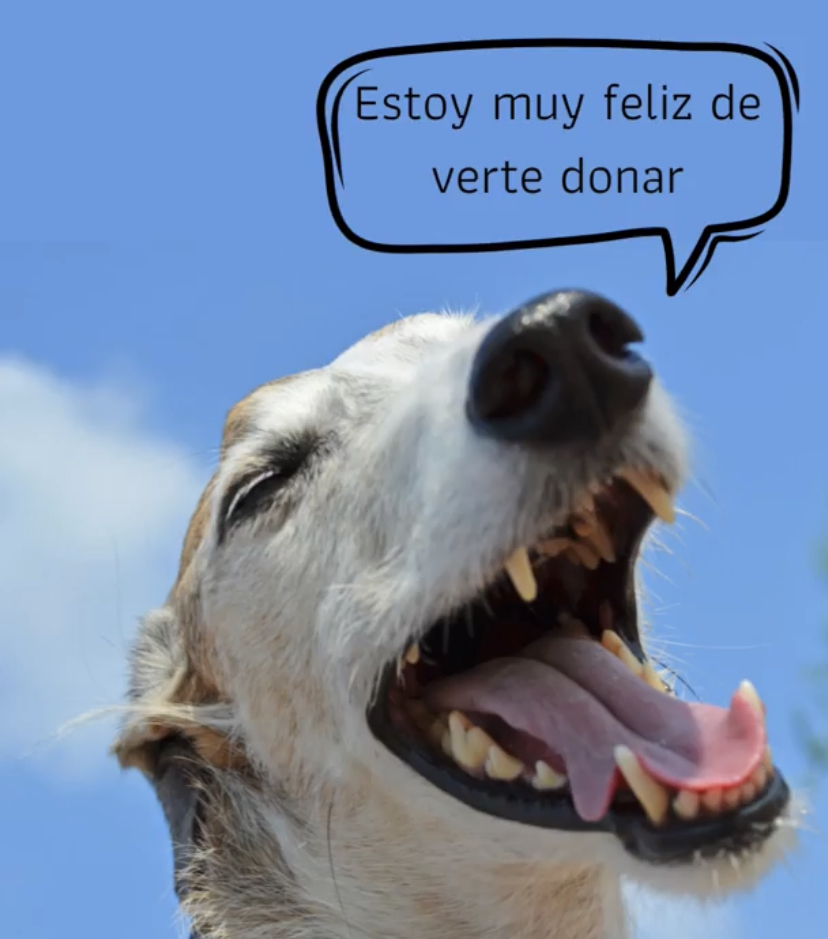

DONACIÓN ECONÓMICA
Existen muchos métodos para ayudarnos, tales como, transferencias bancarias, Mercado pago, podes adherirte a donar un monto fijo por mes y también desde otro pais por Western Union.
DONARDe esta manera podremos hacer una diferencia en la vida de nuestros amigos de cuatro patas. Toda ayuda es bienvenida.
Muchas gracias por considerar colaborar con el Hogar.
Existen muchos métodos para ayudarnos, tales como, transferencias bancarias, Mercado pago, podes adherirte a donar un monto fijo por mes y también desde otro pais por Western Union.
DONARPodes donar cosas que tu mascota ya no use o insumos como, mantas, colchones, ropita, comida, pipetas, etc. Toda ayuda es bienvenida.
DONAR¿Sabias que con una bolsa podes contribuir con el medioambiente?. Eso no es todo #ComunidadOldPrince tiene el objetivo de reciclar plásticos, generar empleo y alimentar a los cachirulos rescatados del Hogar, por cada envase vacío de Old Prince que vos lleves a un punto de acopio, sin importar su tamaño, la marca nos dona 2kg de alimento. Luego los chicos de @suahili.global, se encargan de transformar esas bolsas en productos sustentables.
Unite al equipo de traslados, de esta manera ahorramos un montón de dinero que podemos usar para seguir rescatando. Los únicos requisitos son, tener movilidad de cualquier tipo, no solo se necesita trasladar cachirulos, muchas veces solo se necesitan trasladar insumos, tener tiempo disponible y ganas de ayudar.
QUIERO FORMAR PARTESer un hogar de transito es abrir las puertas de tu casa y de tu corazón.
QUIERO FORMAR PARTE